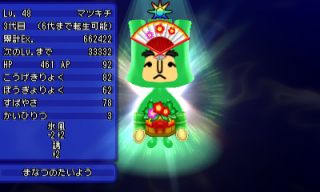
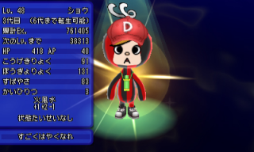

イベントキャッチ
オススメのイベキャ(個体)
4月/ビシット/オススメ度☆☆☆☆

| 服装備 | スーツ | 全属性耐性+1・防御力+18 | |
| 顔装備 | みどりのめがね | 風耐性+1 | |
| 首装備 | ネクタイ | 素早さ+2 | |
| 腕装備 | やすいとけい | 誘惑耐性+2・攻撃力+5 | |
| 背中装備 | ビジネスバッグ | 素早さ+4・防御力+20 | |
| 足装備 | かわぐつ | 電気耐性+1・防御力+6 | |
| 備考 | 薄桃最速+と優秀 | ||
5月/モモ/オススメ度☆☆☆☆☆
| 服装備 | じんばおり | ほかく+0.60倍・素早さ+5 | |
| 顔装備 | ももたろう | ほかく+0.50倍・回避率+5% | |
| 背中装備 | にほんいちののぼり | 回復効果+2.00倍・ターゲット | |
| 足装備 | ぞうり | マヒ耐性+1・素早さ+4 | |
| 備考 | 装備は弱いが桃最速捕獲とかなり優秀、ウサギよりもオススメ | ||
7月/バン/オススメ度☆☆☆☆

| 服装備 | やきゅう | 防御力+5・素早さ+7 | |
| 顔装備 | サングラス | ブラインド耐性+2 | |
| 首装備 | てあみのマフラー | AP自動回復1 | |
| 腕装備 | やきゅうミット | 防御力+10・氷耐性+1 | |
| 背中装備 | ホームランバット | 必中 | |
| 足装備 | スパイク | 土耐性+1・床ダメージ無 | |
| 備考 | バンはAP増加量がバグって最終的にハートより多くなるので旅で強いです。黒オーラだしオススメ！ | ||
7月/ショウコ/オススメ度☆☆☆☆
| 服装備 | ラブリー | 防御力+4・AP節約5% | |
| 顔装備 | ハートグラス | 対突然死+2 | |
| 首装備 | しんぴのスカーフ | 全状態異常耐性+1・回避率+2% | |
| 腕装備 | ひかりのグラブ | 光攻撃・攻撃力+4 | |
| 背中装備 | バニーのしっぽ | 防御力+5・誘惑1% | |
| 足装備 | ひかりのブーツ | 回避率+2%・光耐性+1 | |
| 備考 | 桃色だし回避0最速だし顔もいいので地味に強いです。 | ||
7月/アニー/オススメ度☆☆☆☆
| 顔装備 | バースデーハット | 誘惑耐性+4・経験値+0.25倍 | |
| 首装備 | ガーランドネックレス | 必中・ゴールド+0.25倍 | |
| 背中装備 | カラフルパニエ | ほかく+0.80倍・受け流し10% | |
| 備考 | ハートの皆回復と強く、顔も良く、首の必中や顔装備も使いやすい。旅ならまじで強い | ||
7月/ミスター/オススメ度☆☆☆☆☆
| 顔装備 | はでなアフロ | クリティカル30% | |
| 腕装備 | はでなそで | おたから+1.25倍・ゴールド+0.20倍 | |
| 背中装備 | はでなズボン | 激レア+2.00倍・レア+2.00倍 | |
| 備考 | 金金チェスで回避3最大で素材にうってつけ！金銀レンガを作るなら絶対捕まえたいところ！ | ||
12月/クリス/オススメ度☆☆☆
| 服装備 | オーナメント | 回避率+3%・防御力+8 | |
| 顔装備 | リースカチューシャ | 経験値+0.25倍・ゴールド+0.20倍 | |
| 背中装備 | ジンジャークッキー | 全状態異常耐性+1・特技+0.15倍 | |
| 足装備 | オーナメントブーツ | 土属性+0.20倍 | |
| 備考 | 星型の無敵なので旅で使いやすい。顔装備も割りかし使いやすい | ||
12月/ミサ/オススメ度☆☆☆☆☆
| 服装備 | サンタふく | 激レア+2.00倍 | |
| 顔装備 | あかいぼうし | AP自動回復2・最大AP+20 | |
| 腕装備 | あかいミトン | 必中・おたから+1.00倍 | |
| 背中装備 | あかいスカート | 誘惑4%・回避率+4% | |
| 備考 | 通常は5Jでする激レアキャッチ限定のアンテナ、ゴーヘヴンを2Jでゲットできる唯一のチャンス、レンガ、顔も良いので捕まえたいところ。 | ||
オススメのイベキャ(装備)
1月/カガミ/オススメ度☆☆☆

| 顔装備 | ダイダイのは | 全属性耐性+2 | |
| 首装備 | うらじろ | 全状態異常耐性+2 | |
| 背中装備 | さんぽう | 対霊1.15倍・霊ガード10% | |
| 備考 | 顔装備が強い、首も普通に強い | ||
1月/マツキチ/オススメ度☆☆☆☆
| 顔装備 | おうぎのかざり | 対あく+0.05倍・風格+1 | |
| 腕装備 | そぎたけ | おたから+1.50倍・誘惑耐性+2 | |
| 背中装備 | かどまつのはかま | ゴールド+0.35倍・おたから+1.0倍 | |
| 備考 | どの装備も強い。特に背中装備のゴールド倍率は高級シリーズと同倍率。頭の形も砦なので良い | ||
1月/ダイコク/オススメ度☆☆☆

| 顔装備 | だいこくのおめん | ゴールド+0.20倍・誘惑耐性+2 | |
| 腕装備 | うちでのこづち | ゴールド+0.20倍・経験値+0.20倍 | |
| 背中装備 | たからぶね | ゴールド+0.30倍 | |
| 備考 | ゴールド倍率装備が豊富で良い。金も含むので素材としても良い | ||
2月/ガトー/オススメ度☆☆☆☆

| 服装備 | パティシエふく | 火耐性+3・やけど耐性+5 | |
| 顔装備 | パティシエぼう | 火属性+0.15倍・水耐性+2 | |
| 首装備 | パティシエスカーフ | 最大AP+30・AP節約10% | |
| 腕装備 | あわだてき | とくぎ+0.15倍・AP自動回復2 | |
| 背中装備 | パティシエエプロン | 全属性耐性+1・回復効果+1.50倍 | |
| 備考 | 首が実質一番APが上がるので強い。雑柄だが現在では唯一の塔頭なのも良い | ||
2月/ランジュ/オススメ度☆☆☆☆☆

| 服装備 | オレンジショコラのふく | 土耐性＋3・全状態異常耐性+1 | |
| 首装備 | オランジュロゼット | 加速・誘惑3% | |
| 背中装備 | ショコラオランジュ | 土属性+0.20倍・防御力+30 | |
| 備考 | 首装備がガチパに2個以上は欲しい環境入り装備。顔も良いので捕まえよう。 | ||
4月/カレン/オススメ度☆☆☆

| 首装備 | えんぴつけずり | +突然死・対突然死+3 | |
| 腕装備 | 2Bえんぴつ | 特技+0.10倍・シールド無視 | |
| 背中装備 | じゆうちょう | 経験値+0.20倍・防御力+25 | |
| 足装備 | ホチキス | 毒ボディ・トゲトゲ | |
| 備考 | 腕が強いです。顔素材にも | ||
4月/ケイスケ/オススメ度☆☆
| 服装備 | リクルートスーツ | 全属性耐性+1・全状態異常耐性+1 | |
| 顔装備 | しちさんわけ | クリティカル20% | |
| 首装備 | しゃいんしょう | 必中・防御力+24 | |
| 腕装備 | めいし | 風格+1・攻撃力+20 | |
| 備考 | 首では珍しい必中装備、腕の風格も地味にいい。 | ||
5月/ショウ/オススメ度☆☆☆
| 顔装備 | キャップ | 風耐性+2・防御力+20 | |
| 首装備 | すいとう | 水攻撃・HP自動回復8% | |
| 背中装備 | リュック | かばう30%・防御力+15 | |
| 足装備 | スニーカー | 防御力+20・素早さ+15 | |
| 備考 | 背中のかばうが強い | ||
7月/マルオ/オススメ度☆☆☆
| 服装備 | めいさい | にげる+5% | |
| 顔装備 | パイロットゴーグル | 防御力+2・風耐性+1 | |
| 首装備 | ぼうはんブザー | にげる+5% | |
| 腕装備 | ちからのうでわ | 攻撃力+4 | |
| 背中装備 | たて | 防御力+5・かばう30% | |
| 足装備 | めいさいブーツ | 回避率+3% | |
| 備考 | 地味に回避0最速、装備のたても強い。ほしほしおお | ||
12月/グルート/オススメ度☆☆☆☆
| 首装備 | ガーニッシュ | 全属性耐性+2 | |
| 腕装備 | ローストチキン | 逆ギレ・必中 | |
| 背中装備 | ターキー | ゴールド+0.35倍・誘惑2% | |
| 備考 | 背中装備のゴールド倍率は高級シリーズと同倍率、更に首はふうきバッジ等の代わりに使えます。 | ||
1月/お正月イベント
| 顔装備 | ダイダイのは | 全属性耐性+2 | |
| 首装備 | うらじろ | 全状態異常耐性+2 | |
| 背中装備 | さんぽう | 対霊1.15倍・霊ガード10% | |
| 備考 | 顔装備が強い、首も普通に強い | ||
| 顔装備 | はねつきのはね | 素早さ+20・浮遊 | |
| 首装備 | こま | シールド無視・クリティカル20% | |
| 腕装備 | はごいたとそで | 必中・激レア+1.50倍 | |
| 備考 | 首が少し使えるくらい | ||
| 顔装備 | おうぎのかざり | 対あく+0.05倍・風格+1 | |
| 腕装備 | そぎたけ | おたから+1.50倍・誘惑耐性+2 | |
| 背中装備 | かどまつのはかま | ゴールド+0.35倍・おたから+1.0倍 | |
| 備考 | どの装備も強い。特に背中装備のゴールド倍率は高級シリーズと同倍率。頭の形も砦なので良い | ||

| 服装備 | びゃくえ | 誘惑2%・全状態異常耐性+2 | |
| 顔装備 | みこのえぼし | 光属性+0.10倍・闇耐性+2 | |
| 腕装備 | みこのそで | HP吸収・回避率+4% | |
| 背中装備 | ひばかま | 光属性+0.15倍・最大HP+50 | |
| 備考 | どれも微妙。強いて言うなら服くらい | ||

| 服装備 | すいかん | 霊ガード10%・全属性耐性+2 | |
| 顔装備 | かんぬしのえぼし | 対霊1.20倍・最大AP+20 | |
| 腕装備 | たまぐし | 光属性+0.15倍・対霊1.20倍 | |
| 背中装備 | かんぬしのはかま | 対魔+0.20倍・最大AP+20 | |
| 備考 | 顔が少し使える | ||
| 顔装備 | だいこくのおめん | ゴールド+0.20倍・誘惑耐性+2 | |
| 腕装備 | うちでのこづち | ゴールド+0.20倍・経験値+0.20倍 | |
| 背中装備 | たからぶね | ゴールド+0.30倍 | |
| 備考 | ゴールド倍率装備が豊富で良い。金も含むので素材としても良い | ||
2月/バレンタインイベント
| 服装備 | パティシエふく | 火耐性+3・やけど耐性+5 | |
| 顔装備 | パティシエぼう | 火属性+0.15倍・水耐性+2 | |
| 首装備 | パティシエスカーフ | 最大AP+30・AP節約10% | |
| 腕装備 | あわだてき | とくぎ+0.15倍・AP自動回復2 | |
| 背中装備 | パティシエエプロン | 全属性耐性+1・回復効果+1.50倍 | |
| 備考 | 首が実質一番APが上がるので強い。雑柄だが現在では唯一の塔頭なのも良い | ||

| 服装備 | ベリーショコラのふく | 全属性耐性+1・誘惑耐性+2 | |
| 顔装備 | フランボワーズハット | 対植物+0.15倍・防御力+40 | |
| 首装備 | フランボワーズジャボ | 誘惑4% | |
| 備考 | 装備は弱い。素材にどうぞ | ||
| 服装備 | オレンジショコラのふく | 土耐性＋3・全状態異常耐性+1 | |
| 首装備 | オランジュロゼット | 加速・誘惑3% | |
| 背中装備 | ショコラオランジュ | 土属性+0.20倍・防御力+30 | |
| 備考 | 首装備がガチパに2個以上は欲しい環境入り装備。顔も良いので捕まえよう。 | ||

| 服装備 | エプロン | AP節約10%・防御力+20 | |
| 首装備 | ハートのペンダント | 回復効果+1.25倍・最大HP+5 | |
| 腕装備 | キッチンミトン | 氷耐性+1・しもやけ耐性+2 | |
| 足装備 | もこもこブーツ | 素早さ+3・しもやけ耐性+4 | |
| 備考 | 雑柄だがハート型、なお装備は弱い | ||
| 服装備 | フラワーライン | 防御力+12 | |
| 首装備 | ハートのペンダント | 回復効果+1.25倍・最大HP+5 | |
| 腕装備 | キッチンミトン | 氷耐性+1・しもやけ耐性+2 | |
| 足装備 | もこもこブーツ | 素早さ+3・しもやけ耐性+4 | |
| 備考 | 装備は弱い。皆回復が欲しい人はどうぞ | ||
| 服装備 | ワイシャツ | 対突然死+2・防御力+7 | |
| 顔装備 | ピンクのめがね | 誘惑耐性+1 | |
| 腕装備 | こうきゅうどけい | クリティカル10% | |
| 背中装備 | プリーツスカート | 防御力+9 | |
| 足装備 | すばやさアンクレット | 素早さ+11 | |
| 備考 | 月も銀もそこまでレアではないので微妙。装備もアンテナも弱い | ||
3月/エッグハントイベント
| 服装備 | うさたまふく | ほかく+0.50倍・誘惑3% | |
| 顔装備 | うさぎ | ほかく+0.50倍・最大AP+15 | |
| 首装備 | もこもこマフラー | 氷耐性+2・しもやけ耐性+4 | |
| 腕装備 | うさぎのて | 素早さおとし・ほかく+0.20倍 | |
| 背中装備 | にんじん | HP自動回復4%・毒耐性+2 | |
| 足装備 | うさぎのあし | ゴールド+0.20倍・素早さ+5 | |
| 備考 | 桃うさ耳捕獲と優秀、装備は足が使えるくらいか。 | ||
| 服装備 | きいろたまごふく | ゴールド+0.20倍・誘惑耐性+2 | |
| 首装備 | もこもこマフラー | 氷耐性+2・しもやけ耐性+4 | |
| 背中装備 | たまごのから | オート防御・防御力+5 | |
| 足装備 | とりあし | 素早さ+12 | |
| 備考 | 金が欲しい人はどうぞ | ||
| 服装備 | あおいろたまごふく | 経験値+0.20倍・誘惑耐性+2 | |
| 首装備 | もこもこマフラー | 氷耐性+2・しもやけ耐性+4 | |
| 背中装備 | たまごのから | オート防御・防御力+5 | |
| 足装備 | とりあし | 素早さ+12 | |
| 備考 | 銀が欲しい人はどうぞ | ||

| 服装備 | ピンクベビーふく | 回避率+2%・防御力+3 | |
| 首装備 | まえかけ | 防御力+3 | |
| 腕装備 | ガーデンミトン | 火耐性+1・やけど耐性+2 | |
| 背中装備 | ようせいのはね | 浮遊・最大AP+11 | |
| 足装備 | うわばき | 氷耐性+2・防御力+5 | |
| 備考 | 桃なので良い。顔厳選にでも | ||

| 服装備 | ブルーベビーふく | 回避率+2%・防御力+3 | |
| 首装備 | まえかけ | 防御力+3 | |
| 腕装備 | ドクターてぶくろ | +ねむり・+突然死 | |
| 背中装備 | ようせいのはね | 浮遊・最大AP+11 | |
| 足装備 | うわばき | 氷耐性+2・防御力+5 | |
| 備考 | 顔厳選にでも | ||
| 首装備 | まえかけ | 防御力+3 | |
| 腕装備 | ゴムてぶくろ | 電気耐性+1・かんでん耐性+2 | |
| 背中装備 | ようせいのはね | 浮遊・最大AP+11 | |
| 足装備 | うわばき | 氷耐性+2・防御力+5 | |
| 備考 | 顔厳選ry | ||
4月/スプリングイベント

| 服装備 | いっちょうら | おたから+0.50倍・最大AP+4 | |
| 顔装備 | きいろいぼうし | オート防御・水耐性+1 | |
| 背中装備 | ランドセル | 経験値+0.10倍・最大AP+8 | |
| 足装備 | うわばき | 氷耐性+2・防御力+5 | |
| 備考 | 弱い() | ||

| 服装備 | じょがくせいのふく | こうふん・誘惑3% | |
| 首装備 | がくせいのリボン | 激レア+0.50倍 | |
| 背中装備 | チェックスカート | 誘惑3%・必中 | |
| 足装備 | ソックス | 激レア+0.50倍・しもやけ耐性+2 | |
| 備考 | 顔素材、背中の必中がやや使えるくらいか | ||
| 服装備 | スーツ | 全属性耐性+1・防御力+18 | |
| 顔装備 | みどりのめがね | 風耐性+1 | |
| 首装備 | ネクタイ | 素早さ+2 | |
| 腕装備 | やすいとけい | 誘惑耐性+2・攻撃力+5 | |
| 背中装備 | ビジネスバッグ | 素早さ+4・防御力+20 | |
| 足装備 | かわぐつ | 電気耐性+1・防御力+6 | |
| 備考 | 薄桃最速+と優秀 | ||
| 首装備 | えんぴつけずり | +突然死・対突然死+3 | |
| 腕装備 | 2Bえんぴつ | 特技+0.10倍・シールド無視 | |
| 背中装備 | じゆうちょう | 経験値+0.20倍・防御力+25 | |
| 足装備 | ホチキス | 毒ボディ・トゲトゲ | |
| 備考 | 腕が少し強い。最速+だし顔素材にもどうぞ | ||
| 服装備 | リクルートスーツ | 全属性耐性+1・全状態異常耐性+1 | |
| 顔装備 | しちさんわけ | クリティカル20% | |
| 首装備 | しゃいんしょう | 必中・防御力+24 | |
| 腕装備 | めいし | 風格+1・攻撃力+20 | |
| 備考 | 首では珍しい必中装備、腕の風格も地味にいい。 | ||

| 顔装備 | ヘッドホン | +ねむり・全状態異常耐性+1 | |
| 首装備 | スマホ | 電気耐性+3・最大AP+15 | |
| 背中装備 | ノートパソコン | 電気属性+0.10倍・感電ボディ | |
| 備考 | 首が電気レレパで使えるくらい、顔は何かに使えそう | ||
5月/ゴールデンウィークイベント
| 服装備 | じんばおり | ほかく+0.60倍・素早さ+5 | |
| 顔装備 | ももたろう | ほかく+0.50倍・回避率+5% | |
| 背中装備 | にほんいちののぼり | 回復効果+2.00倍・ターゲット | |
| 足装備 | ぞうり | マヒ耐性+1・素早さ+4 | |
| 備考 | 装備は弱いが桃最速捕獲とかなり優秀、ウサギよりもオススメ | ||
| 服装備 | あかいはらかけ | 攻撃力+10・最大HP+20 | |
| 顔装備 | きんたろう | 誘惑耐性+3・攻撃力+10 | |
| 腕装備 | ちからのうでわ | 攻撃力+4 | |
| 背中装備 | まさかり | 逆ギレ・攻撃力+10 | |
| 備考 | 装備は弱いが金の素材として良い。 | ||
| 服装備 | むしゃのよろい | こんじょう・防御力+10 | |
| 顔装備 | むしゃのまえだて | カウンター・防御力+10 | |
| 腕装備 | むしゃのこて | 攻撃力+10・防御力+10 | |
| 背中装備 | のだち | クリティカル10%・攻撃力+5 | |
| 足装備 | むしゃのぐそく | 素早さ+10・防御力+10 | |
| 備考 | 銀素材としてギリ使えるくらい | ||
| 顔装備 | キャップ | 風耐性+2・防御力+20 | |
| 首装備 | すいとう | 水攻撃・HP自動回復8% | |
| 背中装備 | リュック | かばう30%・防御力+15 | |
| 足装備 | スニーカー | 防御力+20・素早さ+15 | |
| 備考 | 背中のかばうが強い | ||

| 首装備 | むしよけスプレー | 対虫+0.10倍・虫ガード10% | |
| 腕装備 | バスケット | ほかく+1.00倍 | |
| 背中装備 | レジャーシート | 虫ガード15%・床ダメージ無 | |
| 備考 | 多分最大の皆強くなれでバンの次に良い。 | ||

| 顔装備 | カンカンぼう | 光耐性+2・ブラインド耐性+3 | |
| 腕装備 | ガイドブック | とくぎ+0.10倍・最大AP+15 | |
| 背中装備 | キャリーケース | 回復効果+1.30倍・HP自動回復8% | |
| 足装備 | サンダル | 対虫+0.10倍・素早さ+15 | |
| 備考 | 桃桃だが雑柄、素材としては使いづらい | ||
6月/梅雨イベント
| 服装備 | しろウェディング | HP自動回復8%・光耐性+1 | |
| 顔装備 | ウェディングベール | 全状態異常耐性+1・光耐性+1 | |
| 首装備 | ウェディングネックレス | ゴールド+0.10倍・誘惑3% | |
| 腕装備 | しろいグローブ | 光攻撃・闇耐性+1 | |
| 背中装備 | しろいスカート | にげる+10%・光耐性+1 | |
| 備考 | 顔素材くらい。 | ||
| 服装備 | きんのタキシード | ゴールド+0.10倍・防御力+20 | |
| 首装備 | よくみえのリボン | ブラインド耐性+2 | |
| 腕装備 | きぞくのそで | 誘惑耐性+2・攻撃力+6 | |
| 背中装備 | あかいバラ | 誘惑3% | |
| 足装備 | ドレスシューズ | 素早さ+5・レア+0.50倍 | |
| 備考 | 雑柄だけど金橙ハート。うまく単色にしたい | ||

| 服装備 | あおいウェディング | AP自動回復2・氷耐性+1 | |
| 顔装備 | ティアラ | AP自動回復2・光耐性+1 | |
| 首装備 | ウェディングネックレス | ゴールド+0.10倍・誘惑3% | |
| 腕装備 | あおいグローブ | 氷攻撃・火耐性+1 | |
| 背中装備 | あおいスカート | にげる+10%・氷耐性+1 | |
| 備考 | 単純に弱い | ||

| 顔装備 | あおあじさいかざり | AP自動回復2・最大AP+15 | |
| 腕装備 | あおあじさいリング | HP吸収・+ねむり | |
| 背中装備 | あおあじさいパンツ | 水属性+0.10倍・最大HP+35 | |
| 足装備 | あおあじさいのくつ | AP節約5%・最大AP+10 | |
| 備考 | 顔素材() | ||

| 顔装備 | あまつぶのおうかん | 水属性+0.10倍・水耐性+2 | |
| 腕装備 | カエルのてぶくろ | 水攻撃・+毒 | |
| 背中装備 | はっぱのかさ | 幻10%・回避率+10% | |
| 足装備 | カエルのあし | 受け流し5%・素早さ+5 | |
| 備考 | 弱いよー | ||

| 顔装備 | てるてるのかお | HP吸収・+みずびたし | |
| 首装備 | てるてるケープ | 耐霊1.10倍・対魔+0.10倍 | |
| 背中装備 | てるてるマント | 水生ガード10%・水耐性+3 | |
| 備考 | うーん…ｗ | ||
7月/アニバーサリーイベント
| 服装備 | やきゅう | 防御力+5・素早さ+7 | |
| 顔装備 | サングラス | ブラインド耐性+2 | |
| 首装備 | てあみのマフラー | AP自動回復1 | |
| 腕装備 | やきゅうミット | 防御力+10・氷耐性+1 | |
| 背中装備 | ホームランバット | 必中 | |
| 足装備 | スパイク | 土耐性+1・床ダメージ無 | |
| 備考 | バンはAP増加量がバグって最終的にハートより多くなるので旅で強いです。黒オーラだしオススメ！ | ||
| 服装備 | ラブリー | 防御力+4・AP節約5% | |
| 顔装備 | ハートグラス | 対突然死+2 | |
| 首装備 | しんぴのスカーフ | 全状態異常耐性+1・回避率+2% | |
| 腕装備 | ひかりのグラブ | 光攻撃・攻撃力+4 | |
| 背中装備 | バニーのしっぽ | 防御力+5・誘惑1% | |
| 足装備 | ひかりのブーツ | 回避率+2%・光耐性+1 | |
| 備考 | 桃色だし回避0最速だし顔もいいので地味に強いです。 | ||
| 服装備 | ゴスロリ | 闇ターゲット・最大HP+21 | |
| 顔装備 | がんたい | 防御力+2・対突然死+3 | |
| 首装備 | ゴスロリチョーカー | 闇耐性+2・最大AP+4 | |
| 腕装備 | ゴスロリのそで | 攻撃力+8・耐霊1.00倍 | |
| 背中装備 | ゴスロリリボン | 最大HP+16・最大AP+7 | |
| 足装備 | ゴスロリアンク | 素早さ+7・呪い耐性+2 | |
| 備考 | 皆回復はいいのだがなぜアニーと同じ時期に出すのか…全てにおいてアニーの完全下位互換。 | ||
| 服装備 | めいさい | にげる+5% | |
| 顔装備 | パイロットゴーグル | 防御力+2・風耐性+1 | |
| 首装備 | ぼうはんブザー | にげる+5% | |
| 腕装備 | ちからのうでわ | 攻撃力+4 | |
| 背中装備 | たて | 防御力+5・かばう30% | |
| 足装備 | めいさいブーツ | 回避率+3% | |
| 備考 | 地味に回避0最速、装備のたても強い。ほしほしおお | ||
| 顔装備 | バースデーハット | 誘惑耐性+4・経験値+0.25倍 | |
| 首装備 | ガーランドネックレス | 必中・ゴールド+0.25倍 | |
| 背中装備 | カラフルパニエ | ほかく+0.80倍・受け流し10% | |
| 備考 | ハートの皆回復と強く、顔も良く、首の必中や顔装備も使いやすい。旅ならまじで強い | ||
| 顔装備 | はでなアフロ | クリティカル30% | |
| 腕装備 | はでなそで | おたから+1.25倍・ゴールド+0.20倍 | |
| 背中装備 | はでなズボン | 激レア+2.00倍・レア+2.00倍 | |
| 備考 | 金金チェスで回避3最大で素材にうってつけ！金銀レンガを作るなら絶対捕まえたいところ！ | ||
8月/夏休みイベント
| 顔装備 | カモメのすいへいぼう | 対虫+0.15倍・攻撃力+20 | |
| 腕装備 | カモメのはね | 浮遊・素早さ+20 | |
| 背中装備 | カモメのお | 対虫+0.15倍 | |
| 足装備 | カモメのあし | 対虫+0.10倍・虫ガード10% | |
| 備考 | ステルスが欲しいなら捕まえよう。腕装備はそうこうけんの代わりに使えます。 | ||
| 服装備 | しろすいへいのふく | 水生ガード10%・全状態異常耐性+1 | |
| 顔装備 | しろすいへいぼう | 電気耐性+2・かんでん耐性+3 | |
| 首装備 | しろすいへいのえり | +みずびたし・最大AP+25 | |
| 腕装備 | すいへいのてばた | 受け流し8%・れんけい | |
| 足装備 | すいへいのブーツ | 水属性+0.10倍・みずびたし耐性+3 | |
| 備考 | まぁ弱いよなぁ | ||
| 服装備 | あおすいへいのふく | 水生ガード10%・全属性耐性+1 | |
| 顔装備 | あおすいへいぼう | 風耐性+2・かぜっぴき耐性+3 | |
| 首装備 | あおすいへいのえり | +みずびたし・最大HP+50 | |
| 背中装備 | ふねのかじ | オート防御・最大HP+50 | |
| 足装備 | すいへいのブーツ | 水属性+0.10倍・みずびたし耐性+3 | |
| 備考 | 弱いのよ～ | ||
| 顔装備 | くちばし | 水属性+0.10倍 | |
| 背中装備 | かっぱのこうら | 水耐性+3・オート防御 | |
| 備考 | ありえないほど弱い | ||
| 服装備 | やまぶし | 全状態異常耐性+2・最大AP+8 | |
| 顔装備 | てんぐ | 特技+0.05倍・最大AP+10 | |
| 首装備 | じゅず | 耐霊1.10倍・マヒ耐性+2 | |
| 背中装備 | てんぐのはね | 浮遊・回避率+5% | |
| 足装備 | たかげた | 素早さ+7・AP節約7% | |
| 備考 | やまぶしがレレパで使えるくらいだがいらない。 | ||
| 顔装備 | ひとつめ | ゴースト化10%・呪い耐性+2 | |
| 首装備 | じゅず | 耐霊1.10倍・マヒ耐性+2 | |
| 足装備 | たかげた | 素早さ+7・AP節約7% | |
| 備考 | うーん、弱い | ||
9月/お月見イベント
| 顔装備 | もちうさぎのみみ | 対魔+0.15倍・闇耐性+2 | |
| 首装備 | もちうさボレロ | みずびたし耐性+3・回避率+6% | |
| 腕装備 | もちうさミトン | おたから+1.25倍・必中 | |
| 背中装備 | もちうさパンツ | 闇攻撃・闇属性+0.15倍 | |
| 足装備 | もちうさシューズ | レア+1.25倍・素早さ+20 | |
| 備考 | 腕が少し強いくらいで他は弱い | ||
| 顔装備 | つきうさぎのみみ | 対竜+0.15倍・光耐性+2 | |
| 首装備 | つきうさボレロ | +ブラインド・回避率+6% | |
| 腕装備 | つきうさミトン | ほかく+0.80倍・特技+0.15倍 | |
| 背中装備 | つきうさパンツ | 光攻撃・光属性+0.15倍 | |
| 足装備 | つきうさシューズ | 激レア+1.20倍・素早さ+20 | |
| 備考 | 弱いです | ||
| 服装備 | げつめんのふく | 土属性+0.15倍・防御力+30 | |
| 顔装備 | まんげつ | 光属性+0.15倍・魔ガード10% | |
| 首装備 | まんげつブローチ | 耐霊1.20倍 | |
| 背中装備 | すすき | 対魔+0.15倍・植物ガード10% | |
| 備考 | 強そうだけど弱い | ||
| 服装備 | マロンのふく | おたから+0.50倍・誘惑3% | |
| 腕装備 | いがぐり | 防御おとし・+マヒ | |
| 足装備 | マロンシューズ | おたから+0.50倍・誘惑2% | |
| 備考 | 顔はいいけど雑柄だし弱い | ||
| 服装備 | グレープのふく | 激レア+0.50倍・最大AP+15 | |
| 首装備 | グレープのへた | 激レア+0.50倍・経験値+0.05倍 | |
| 足装備 | グレープシューズ | 激レア+0.50倍・AP自動回復2 | |
| 備考 | 顔素材にはよさそう | ||
| 服装備 | ナスのふく | レア+0.50倍・誘惑耐性+2 | |
| 首装備 | ナスのへた | レア+0.50倍・ほかく+0.10倍 | |
| 足装備 | ナスシューズ | レア+0.50倍・誘惑耐性+2 | |
| 備考 | 顔素材にはよさそう | ||
10月/ハロウィンイベント
| 服装備 | キョンシーのふく | ゴースト20% | |
| 顔装備 | キョンシーのぼうし | 霊ガード10%・最大AP+20 | |
| 腕装備 | キョンシーのそで | 特技+0.15倍・闇耐性+2 | |
| 備考 | 腕装備をデドポ対策に使ってる人は一応いるが使い所が難しい… | ||
| 服装備 | かいぶつのふく | 攻撃力+50・最大HP+50 | |
| 顔装備 | かいぶつのボルト | 電気属性+0.20倍 | |
| 腕装備 | かいぶつのグローブ | 攻撃+0.15倍・攻撃力+50 | |
| 足装備 | かいぶつのあし | 逆ギレ・防御力+40 | |
| 備考 | 実は回避0最速、更に流行りの属性に強い青緑だが雑柄…。当然使いにくい | ||
| 顔装備 | デビルのつの | 恐怖1%・闇耐性+2 | |
| 腕装備 | デビルフォーク | 耐霊1.15倍・+突然死 | |
| 背中装備 | デビルのはね | 誘惑5%・+突然死 | |
| 足装備 | デビルブーツ | 恐怖2% | |
| 備考 | 桃色だが雑柄、つまりそういうこと(？？？) | ||
| 服装備 | ハロウィン | 誘惑耐性+2・防御力+20 | |
| 顔装備 | ハロウィンのおめん | 耐霊1.00倍・防御力+6 | |
| 首装備 | ハロウィンのリボン | AP自動回復1 | |
| 腕装備 | ハロウィングローブ | +突然死 | |
| 背中装備 | ハロウィンマント | AP節約7%・闇耐性+1 | |
| 足装備 | ハロウィンブーツ | 加速 | |
| 備考 | 特に強いところなし！ | ||
| 服装備 | ほうたい | HP自動回復12%・防御力+5 | |
| 顔装備 | がいこつのおめん | +突然死・防御力+2 | |
| 腕装備 | とてもするどいつめ | +猛毒・攻撃力+3 | |
| 備考 | 実は回避0最速、更に流行りの属性に強い緑紫かつレア柄？！あれ？強くね？と今更思ってスルーしたの後悔してる人← | ||
| 顔装備 | まじょのぼうし | 経験値+0.10倍・最大AP+10 | |
| 首装備 | ハロウィンのリボン | AP自動回復1 | |
| 背中装備 | かぼちゃパンツ | ゴールド+0.10倍・対獣+0.10倍 | |
| 足装備 | くろねこブーツ | 経験値+0.10倍・にげる+8% | |
| 備考 | くろねこブーツはかわいい、それだけ | ||
11月/オータムイベント
| 服装備 | パイロットふく | 風耐性+2・眠り耐性+3 | |
| 顔装備 | パイロットぼう | 全属性耐性+1・素早さ+10 | |
| 足装備 | ジェットのしゃりん | 攻撃力+20・防御力+20 | |
| 備考 | 雑柄はダメです | ||
| 服装備 | しょうぼうしふく | 水属性+0.15倍・水耐性+2 | |
| 顔装備 | たいねつメット | 火耐性+2・防御力+15 | |
| 腕装備 | ておの | 対植物+0.30倍・シールド無視 | |
| 備考 | 3体攻撃は弱いです | ||
| 服装備 | しろバイふく | 硬化・最大HP+100 | |
| 顔装備 | しろバイメット | 虫ガード10%・素早さ+10 | |
| 腕装備 | ゆうどうぼう | 対植物+0.20倍・光属性+0.15倍 | |
| 備考 | 捕獲だけど雑柄、顔装備は何かに使えそうで結局使えない | ||
| 服装備 | いちょうのきもの | 電攻撃・全属性耐性+1 | |
| 顔装備 | いちょうかざり | 対水生+0.15倍・電気耐性+2 | |
| 腕装備 | いちょうのおうぎ | 特技+0.15倍・電気属性+0.15倍 | |
| 背中装備 | いちょうのは | AP自動回復2・最大AP+30 | |
| 備考 | 回避6最速だけど雑柄だし治すは最大のほうがよさそう感、腕はらいじんのこて代わりに使えそうではある | ||
| 服装備 | もみじのきもの | 風攻撃・全状態異常耐性+1 | |
| 顔装備 | もみじかざり | 対獣+0.15倍・風耐性+2 | |
| 腕装備 | もみじのおうぎ | 特技+0.15倍・風属性+0.15倍 | |
| 背中装備 | もみじのは | シールド無視 | |
| 備考 | 回避6最速なのでうまいこと素材に使えそう。ただ皆回復は最大のほうがいいよな() | ||
| 顔装備 | どんぐりベレー | 特技+0.15倍・土耐性+2 | |
| 背中装備 | どんぐりパンツ | 誘惑5%・回復効果+1.50倍 | |
| 足装備 | どんぐりのくつ | 土属性0.15倍・どろだらけ耐性+4 | |
| 備考 | 微妙感はある。 | ||
12月/クリスマスイベント
| 服装備 | オーナメント | 回避率+3%・防御力+8 | |
| 顔装備 | リースカチューシャ | 経験値+0.25倍・ゴールド+0.20倍 | |
| 背中装備 | ジンジャークッキー | 全状態異常耐性+1・特技+0.15倍 | |
| 足装備 | オーナメントブーツ | 土属性+0.20倍 | |
| 備考 | 星型の無敵なので旅で使いやすい。顔装備も割りかし使いやすい | ||
| 服装備 | サンタスーツ | おたから+1.00倍・誘惑耐性+3 | |
| 顔装備 | サンタのひげ | ゴールド+0.25倍・誘惑耐性+4 | |
| 腕装備 | プレゼント | レア+1.50倍・誘惑3% | |
| 背中装備 | プレゼントのふくろ | ほかく1.50倍・激レア+1.50倍 | |
| 備考 | 顔装備は高級シリーズに次ぐゴールド倍率の高さ、あとはプレゼントが使えるくらいか。個体は弱いのでリースカチューシャ付きのクリスをオススメする。 | ||
| 服装備 | サンタふく | 激レア+2.00倍 | |
| 顔装備 | あかいぼうし | AP自動回復2・最大AP+20 | |
| 腕装備 | あかいミトン | 必中・おたから+1.00倍 | |
| 背中装備 | あかいスカート | 誘惑4%・回避率+4% | |
| 備考 | 通常は5Jでする激レアキャッチ限定のアンテナ、ゴーヘヴンを2Jでゲットできる唯一のチャンス、レンガ、顔も良いので捕まえたいところ。 | ||
| 服装備 | トナカイ | 虫ガード10%・植物ガード10% | |
| 顔装備 | トナカイのかお | 対植物+0.30倍・攻撃力+10 | |
| 腕装備 | トナカイのひづめ | 攻撃+0.10倍・攻撃おとし | |
| 足装備 | トナカイのあし | 床ダメージ無・加速 | |
| 備考 | 弱いです。なおN電だとぶっ壊れでしたなぁ | ||